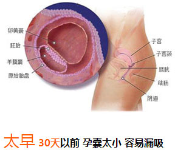
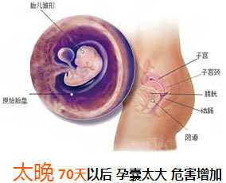
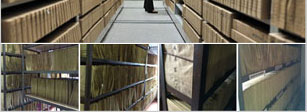

术前注意和准备事项：

-
1术前一天避免性生活
2术前一日洗澡，清洗外阴部
3术前四小时禁止进食
4携带病例、卫生护垫、面巾纸
5穿着便于穿脱的外裤或裙子
术后调理和注意事项：
-
1术后注意保持外阴清洁，半月内不要
盆浴避免感染
2人流后一个月内禁止同房
3人流后2-3天内最好休息，不要
过于激烈的活动
4少吃辛辣刺激的食物，多补充蛋白质
作为南宁首家妇科专科医院，中山妇科率先引进MVA可视人流术，已造福16万意外怀孕女性，无一例失败事故！
0损伤 0疼痛 0残留 0感染 不影响再孕！
术前检查身体各项机能，有炎症者做必要的消炎治疗，防止炎症扩散感染，确保人流手术的的安全。
采用空气洁净技术对微生物污染采取不同程度的控制，保障手术安全无污染。
通过磁疗、震荡、按摩全方位的绿色调理，保养卵巢迅速促进子宫复原，确保术后生殖器官不变形、不松弛。
哇！早孕试纸两条杠！怎么办？早孕试纸一深一浅咋回事？浪漫的爱情路上,当意外怀孕不期而至时,人们往往只想尽快解决身体里面"麻烦",殊不知,过早或过晚做人流手术对身体所造成的伤害。
 咨询我的怀孕时间  咨询我的怀孕时间正规的人流医院有国家颁发的资质证明，所使用
的药品、手术耗材等均达到卫生部统一标准，而
非正规的医疗机构不仅没有相关证明，药品以次
充好、设备环境落后、医资力量薄弱等现象普遍
存在。
咨询医院是否正规安全的人流手术包含三个要素：即术前规范检查
术中安全操作、术后快速恢复，三者缺一不可。
遗漏手术环节，实习生上台操作，扩宫刮宫都会
增加手术风险，引起子宫穿孔、宫腔粘连、不孕
等人流并发症。
咨询人流安全系数合格的人流医院收费标准应按照物价局要求统一
制定，既不能存在任意标价也不允许利用减少必
要手术环节、使用廉价手术耗材等方式压低治疗
成本，利用超低价吸引患者，置手术安全于不顾
的情况发生。
咨询手术收费标准南宁中山医院妇科是南宁首家经卫生部门批准设立的妇科专科医院，众多妇科名医汇聚中山，医院特开设多个妇科专科门诊，涉及420余种常见妇科疾病。
我院建立疾病资源库，有助于充分发掘和利用我院疾病资源的优势，疾病资源库拥有436317例妇科病案例，对于患者信息绝对保密，不对外查询。
做人流哪家医院最好1术前一天避免性生活
2术前一日洗澡，清洗外阴部
3术前四小时禁止进食
4携带病例、卫生护垫、面巾纸
5穿着便于穿脱的外裤或裙子
1术后注意保持外阴清洁，半月内不要
盆浴避免感染
2人流后一个月内禁止同房
3人流后2-3天内最好休息，不要
过于激烈的活动
4少吃辛辣刺激的食物，多补充蛋白质